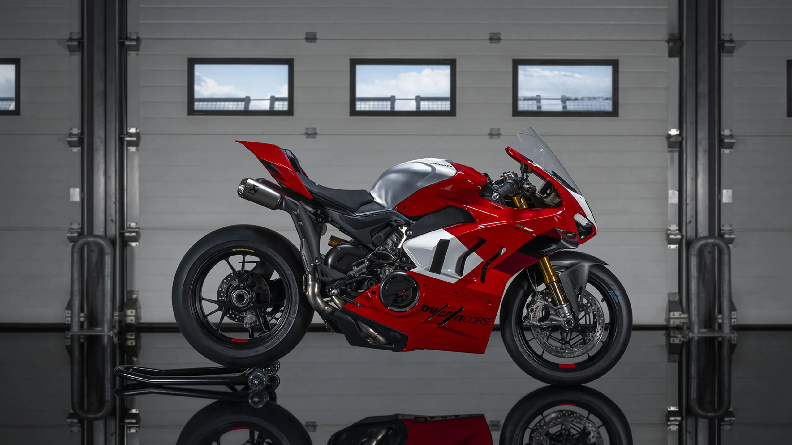

Motors Powers

El motor V4r de 998cc alcanza a subir 16.500 rpm y el precio es acorde a una moto completamente de carreras, acá te indicamos los cambios más resaltantes.
CARACTERISTICAS GENERALES
Motor: La Panigale V4R está equipada con un motor de cuatro cilindros en V a 90 grados, desplazamiento de 998 cc. Es un motor de altas revoluciones diseñado para ofrecer un rendimiento excepcional en pista.
Potencia: Es capaz de producir una potencia máxima de alrededor de 218 caballos de fuerza (160 kW) a 15,000 rpm, lo que la convierte en una de las motocicletas más potentes disponibles en el mercado.
(tener en cuenta que la potencia estimada de 240.5 hp son mediante modificaciones del motor, reprogramación, subida de rpm y añido de full system exclusivo de la marca)
Par motor: Ofrece un par motor máximo de aproximadamente 112 Nm a 11,500 rpm, lo que garantiza una excelente respuesta del motor en todas las situaciones.
Transmisión: Cuenta con una transmisión de seis velocidades con tecnología de cambio rápido (quickshifter) que permite cambios de marcha suaves y rápidos sin necesidad de utilizar el embrague.
Chasis: La Panigale V4R presenta un chasis monocasco de aluminio que proporciona una excelente rigidez y agilidad en la conducción, lo que la hace ideal tanto para la pista como para la carretera.
Suspensión: Está equipada con una suspensión delantera Öhlins de alta gama y una suspensión trasera Öhlins con ajuste electrónico, lo que permite al piloto adaptar la configuración de la suspensión según sus preferencias y las condiciones de conducción.
Frenos: Cuenta con un sistema de frenos Brembo de alta performance con discos delanteros de gran tamaño y pinzas monobloque que ofrecen una excelente capacidad de frenado y control.
Electrónica: La Panigale V4R está equipada con un avanzado paquete de electrónica que incluye varios modos de conducción, control de tracción, control de wheelie, ABS de última generación, control de lanzamiento y control de crucero adaptativo, entre otros.
MEJORAS DEL MOTOR
El protagonista del modelo 2023, vuelve a ser el motor 90° V4 Desmosedici Stradale R de 998 cc: alcanza el régimen máximo de 16.500 rpm en sexta marcha (500 rpm menos en el resto de relaciones) y desarrolla la potencia máxima de 218 caballos a 15.500 rpm en configuración Euro5.
Es un rendimiento ligeramente reducido respecto al antecesor Euro4, producto de la mayor limitación del sistema de escape Euro5. Pero con solo instalar el full system de carreras alcanza los 237 caballos, que son 3 más que la versión 2022.
La marca de lubricantes Shell, acompañando el desarrollo del nuevo motor Ducati Desmosedici Stradale R, ha creado un aceite especial que permite una reducción del rozamiento mecánico en un 10% y conduce a un aumento de la potencia máxima en otros 3,5 caballos, que eleva a +4,5 el limitador. La formulación de este aceite se basa en el uso de aditivos de tipo racing, específicos para motores de altas revoluciones equipados con clutch seco.
Resumiendo, con full system y aceites dedicados, la Panigale V4R alcanza los 240,5 caballos de fuerza.
Por primera vez en una motocicleta de uso en calle, se utilizan bielas de titanio gun drilled, les explicamos para que no se pierdan, perforadas longitudinalmente a lo largo del eje, lo que permite el paso de aceite desde la cabeza hasta el pie de biela, esto evidentemente mejora la lubricación del bulón y por tanto es confiable en condiciones extremas.
Los pistones llevan una capa con tratamiento superficial DLC, como en MotoGP y Fórmula 1, y que se aplica por primera vez a un motor de calle. Los pistones son entonces más ligeros en 5 gramos: -2% de su peso.
El perfil de las levas de admisión es más agresivo y tiene mayor sustentación, además está adaptado a nuevas bocinas de largo variable, también modificadas según la potencia máxima en la configuración con el escape racing.
Se han modificado las relaciones de transmisión, retomando lo hecho en las motos que compiten en Superbike, como ya sucedió en la Panigale V4 S 2022, con el alargamiento del primero, segundo y sexto cambio. El salto más corto entre la primera y la segunda permite que Quick Shift funcione de manera efectiva.
Electrónicamente se dio la evolución de los Power Modes, nueva pantalla Track Evo en el tablero, mapas del motor con calibración dedicada a cada cambio de la caja, mejoras en el DTC y el sistema Ride By Wire, pero también adopta la estrategia Engine Brake Control EVO 2, nueva configuración para el Quickshifter y actualización del control del ventilador de refrigeración.
Para aquellos que deseen usarla solo en pista, desarrollaron el software Performance DTC EVO 3 específico para neumáticos slick-rain (llantas de carrera diseñadas para uso en lluvia, se vende como accesorio y hace que la moto no esté homologada para circular por carretera).
Este software también permite activar el funcionamiento intermitente de la luz de posición trasera, según lo exige la normativa de carreras en caso de lluvia y reemplaza el modo de conducción en la calle con un modo lluvia diseñado específicamente para su uso en superficies mojadas.
Finalmente, como en las motos de carreras, también presenta el Pit Limiter para controlar la velocidad a la salida y entrada del pit lane, mientras que el acelerador más compacto cancela la carrera libre.
La Ducati Panigale V4R presenta importantes mejoras en su chasis y suspensión para optimizar su rendimiento en pista. El chasis se basa en el conocido Front Frame y el basculante monobrazo de aleación de aluminio.
La suspensión Öhlins NPX25/30 en la parte delantera, con un mayor recorrido, y un amortiguador Öhlins TTX36 en la parte trasera, permiten ajustar la distancia entre ejes y la altura trasera para una mayor agilidad y estabilidad. El depósito de aluminio cepillado tiene una capacidad de 17 litros y un diseño ergonómico, mientras que las nuevas alas aerodinámicas ofrecen una carga aerodinámica similar en un diseño más compacto. Los accesorios incluyen un sistema de escape Akrapovič de titanio, rines de magnesio y posapiés regulables de aluminio, entre otros. El paquete de accesorios Pit Stop ofrece calentadores de neumáticos y soportes de garaje, además de opciones de fibra de carbono.
PRECIO Y DISPONIBILIDAD
La V4R 2023 saldrá a la venta por €43.990 (Aproximadamente $201.822.448 COP, más costos de importación), una serie limitada que lleva el número progresivo y el nombre del modelo en el triple clamper superior (la placa de dirección), en aluminio macizo mecanizado.
Que te parece esta nueva version de la Ducati Panigale V4r.